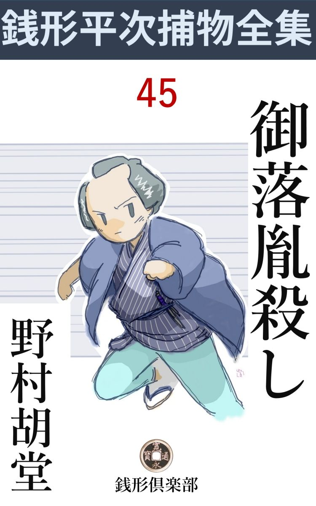
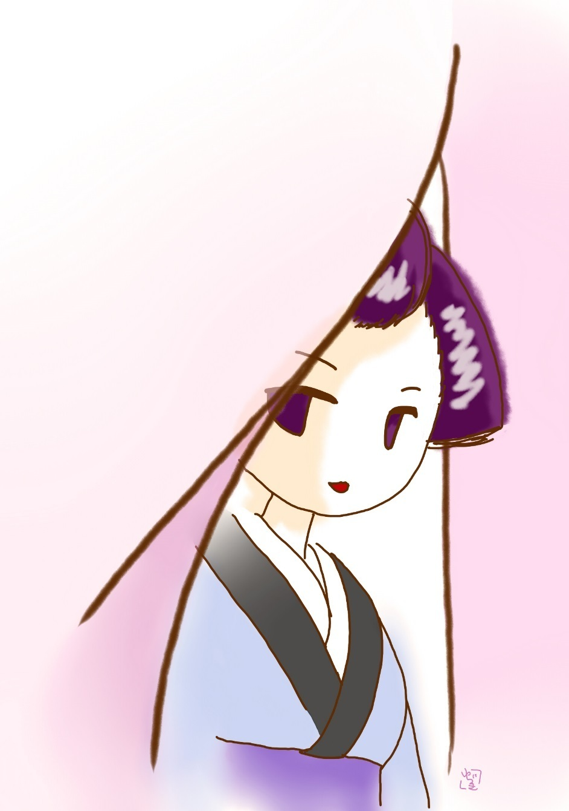

| 御落胤殺し: 銭形平次捕物全集第45話 (銭形倶楽部) | |
| 野村胡堂 | |
| ZENIGATA CLUB (2018) | |

一
「親分、------ちょいと、八五郎親分」
ガラッ八は背筋を擽 ぐられるような心持で振り返りました。菊日和の狸 穴 から、榎坂 へ抜けようと言うところを、後ろからこう艶 めかしく呼止められたのです。
「どこだ」
グルリと一と廻り、視線で描いた大きい弧 がツイ鼻の先の花色暖 簾 の隙間を見落していたのです。
「ここよ、ちょいと、親分」
「なんだ、------俺を鴨 だと思っているのか」
ガラッ八は背 を向けました。茶店の姐さんが、客のない退屈さに、顔見知りの自分へ声を掛けたのだろうと思ったのです。
「あら、私は此店 の姐さんじゃありませんよ。神田から親分の後を跟けて来て、御用の済むのを待っていたんじゃありませんか。ちょいと、お顔を貸して下さいな、内々のお願いですから」
肩で暖簾を揉んで、輪郭 が霞 むような真白な顔を出したのは、二十一、二の女、素人とも玄人ともつかぬ、抜群の艶めかしさを発散させます。
「御免を蒙ろう、俺は忙しい、------御用繁多だ」
ガラッ八は独り者の癖に、若い女には妙に突っ慳貧でした。いやどうかしたら、独り者だから反って若い女には無愛想だったかも知れず、若い女に無愛想だから、何時まで経っても独り者だったのかもわかりません。
「ホ、ホ、ホ、ホッ、ホッ」
女はいきなり笑い出しましたが、麻布中の空気を薫蒸 するような笑いです。
「何が可笑しい」
ガラッ八は弥造を肩のあたりまで突き上げて、拳骨の先から相手の女を睨め廻します。
「だって、御用繁多な方が、一軒一軒菊 細工 を覗いて、一刻半も油を売ってるんですもの」
「何？」
「その癖、お茶も呑まずに引返すじゃありませんか。良い御用聞がそんな心掛けじゃ、世間が穏やかなわけはないわねえ」
「------」
ガラッ八は弄 ばれているような憤懣と、妙に腹の底からコミ上げてくる愉悦を感じました。女の調子には、皮肉な色っぽさがあって、羽根箒 で顔中を撫で廻されるような心持だったのです。

菊細工はまだ麻布の狸穴坂の両側を本場にした頃、ガラッ八は飯倉へ用事で来た序 に、ここまで足を伸して、千輪咲や原始的な細工物や、百姓家の畑に育ったままの菊を眺めて、引返したところを妖 かしの網に引っ掛ったのでした。（注、菊細工の本場は文化以後染井巣 鴨 に移り、弘化年間に根津、谷中、駒込を中心として精巧な菊人形に進化し、一時中絶して、明治十年頃団子坂の菊人形に復活したのです）
「ね、八五郎親分、洒落や冗談じゃありません、------人一人の命に拘わる事なんだから、聴いて下さいな」
女は差し寄ってこう囁くのです。
「一人の命？」
「え、私の甥 が人手に掛って死んだのに、届けるところへ届けても、取合ってくれる者もありません。それじゃこの世の中は闇じゃありませんか」
頬に通う香ばしい息、------それよりもガラッ八の本能は、話の重大性を直感して、この女の言いなり放題に、茶店の奥へ通る気になったのです。
「その話を聴こうじゃないか、人一人の命に係わるとか、甥が人手に掛って死んだという話を------」
二
ガラッ八の八五郎が神田へ帰ったのが、やがて戌刻 半とも思う頃でした。
麻布から辿 って一刻あまり、夜風にも醒め切れないホロ酔の顔を、押し拭いもせずに、そのまま銭形平次の前へ持って来たのでしょう。
「親分」
長い舌がペロリと上唇を甜 めました。
「なんだ、八か。今頃どこから帰って来たんだ」
「親分」
「まア坐れ、入口に突っ立って物を言う人間はないよ、------あッ、懐手をしたまま坐りやがった、呆れた野郎だ」
平次は口小言を言いながらも、気の置けない微笑を浮べて、果し眼 の八五郎を迎えました。何か素晴らしい獲物をくわえて来た猟犬を迎える主人の態度------と言った調子です。
「それどころじゃねえよ。御府内に人殺しがあるのを、御用聞が知らずにいるという法はねえ、------知って下手人を捕 えねえという法もない筈だ、ね親分」
「おかしな事を言うじゃないか、俺の縄張うちに、目こぼしになった『殺し』でもあったと言うのかえ」
「その通りですよ、親分」
「おやおやおや、それは初耳だ。聞かして貰おうじゃないか八、次第に寄っては、十手捕縄を返上して、坊主になって詫 をしよう。どこの誰が一体殺されたんだ」
平次も少しばかり真剣になりました。
「親分が悪いというわけじゃありませんよ。相手の大名が癪 にさわるんで、------落着いて聞いて下さいよ」
「俺はあわてちゃいないよ、手前こそ落着いて話せ」
弾み切った心持を誘発 されて、二人は思わず顔を見合せました。が、次の瞬間にはもう融然として笑っております。
「こうですよ、親分、------鎌倉町の源太郎親分のところに、綺麗な娘が二人あったのは知っていなさるでしょう」
「知っているよ。源太郎はやくざ だが、姉娘のお銀が大名のお部屋様になって、跡取りの男の子を生んでから、すっかり隠居して、堅気になっているという話だ------それがどうしたんだ」
「その跡取りの男の子------大名の若様が死んだんで」
「詳 しく話してみるが宜い、何かわけ がありそうだ」
「わけ は大ありで------先刻狸 穴 の帰り、後から声を掛ける者があるじゃありませんか。振り返って見ると凄いほど美い女で------無理にあっしを茶店へ引入れて、------何を言うかと思や、平次親分が乗出すように、骨を折ってくれと------」
「誰だい、その凄いほどの女というのは？」
「源太郎の二番目娘、お銀の方 の妹のお徳ですよ。親父の子分でお小姓の捨吉と言われた好い男と出来て、駈 落 までした札付きの娘でさ、一時は品川に巣を構えて小唄か鼻唄の師匠をしていたという------」
「何だ、あの転婆娘か。------さぞ手前は舐 められた事だろう」
「姉のお銀が大名のお屋敷に上がって、男の子を生んだ時、親父も気が挫けたものか、妹のお徳の不始末を勘弁して、捨吉共々家へ呼び入れたそうですよ」
ガラッ八は委細構わず話を進めて行きました。お徳に擽 ぐられるような目に逢わされて、ツイ先刻までポッと酔心地だった事はおくびにも出しません。
「それから、どうしたんだ」
「お銀の奉公先は、江州の小室で一万二千石の領主小堀和泉守様------江戸御上屋敷は駿河 台 だ。奥方には御姫様ばかりで跡取りがない。行儀見習に上がったお銀は、殿様の覚召しに叶って御手が附き、男の子十次郎様を生んで、御部屋様に直った。跡取りの御腹様で、たいした勢いだったが、奥方の嫉 妬 が何としても激しい」
「------」
「源太郎の娘で、気象者で通ったお銀の方も、椎 茸 髱 の女中共に苛 め抜かれて、少し気が変になった。到頭若様十次郎を伴れて鎌倉町の親のところへ帰ったのはツイ一と月ばかり前、お邸から人橋かけての迎いを蹴飛ばしているうちに、------五日前」
「その十次郎様というのが霍乱 で死んだというのだろう」
「へエ、親分は知っているんで------？」
ガラッ八の顔の長さ。
「季節外れの霍乱で、源太郎の孫がやられたという話は聞いたが、それが大名の跡取りとは知らなかったよ。源太郎には孫が多勢あった筈だ」
「銭形の親分でも燭 台 下暗 しさ」
「燈台下暗しだろう」
と平次。
「どっちだって、たいした違いじゃねえ。------その霍乱が、駿河台の御屋敷から届いたお菓子を喰った晩から起って、翌る日の陽の目も見ずに、若様が冷たくなっていたとしたら、どんなもんで」
「それは知らなかった」
平次も予想外な顔色です。
「菓子に中 てられたに違いはねえ。怪しいのはそれを持って来た桑原伊織という侍だが、相手が一万二千石でも大名だ。町人ややくざ の悲しさ、どんなに疑っても腹が立っても、ゴマメの歯ぎしりで何にもならねえ」
「------」
「お部屋様のお銀はそれから半病人、親父の源太郎も取る年だし、伜源助と妹婿の捨吉は弱気で当にならず、お徳がたった一人で腹を立てて、どんな事をしても下手人を探し出し、敵が討てないまでも面を見てやりたい、お願いだから銭形の親分さんに乗出して下さるように------とこう言う話で」
ガラッ八はお徳の声色 まで使って聞かせました。縁台の上で、菊の香りにひたりながら、二つ三つはお徳にグリグリをやられたのでしょう、何しろ、その熱心さは一と通りのことではありません。
三
「そいつは御免を蒙 ろうよ、八」
「へエ------？」
ガラッ八は驚きました。話が一段落と見るや、平次はツイと座を立って、縁側の雨戸を一枚引きあけ、水の如く入って来る月明りの中に、ホッと太 息 を漏らしたのです。
「気の毒だが、そいつは構っちゃいられねえ。俺は町方の御用聞、大名のお家騒動に口を出せる道理もなく、よしや下手人が判ったところで、乗込んで縛るわけにも行くめえ」
「だがネ、親分」
「無駄だよ、八、放って置くが宜い、手前 はお徳の阿魔に魅 入 られたんだ」
「親分」
「判っているよ、どうせお銀も跡取りを亡くしてお屋敷へ帰れないと決ると、奥方の一味が小癪にさわるから、騒ぎを大きくして公儀の耳に入れ、あわよくば小堀の家へケチでも附けようと言う術 だろう。------親父の源太郎は今こそ老 耄 れた顔をしているが、あれでなかなかの軍師さ」
平次は益々落着き払います。
「何だか知らないが、主人の血筋を引いた赤ん坊を毒害するのは、あまりじゃありませんか。ねえ親分、主殺しは磔 刑 だ」
「厭だよ、誰が何と言っても、俺は大名の御家騒動に掛り合うのは御免だ、------茶碗一つ、色紙一枚紛 失 しても、腹を切ったり、手討ちになったりする世界だ。町方の御用聞は江戸の町人を相手にして、何事もなく暮せば役目は済むんだ。お徳は何と言ったか知らねえが、手前も深入りしちゃならねえ」
「------」
八五郎は不平で不平でたまらない様子でした。がこう言ったら最後、容易に言う事を聴いてくれる平次でないことはよく知っておりますし、お徳に絡 み付かれた時の亢奮が次第に醒めると、この事件は全く、町方の岡っ引とは縁の無いような気がして来るのでした。
「親分、それじゃ帰りましょう」
八五郎はションボリ立上がりました。
「何だ、これから塒 へ帰るつもりかえ。泊って行くが宜い、もう亥 刻 過ぎだろう」
「へエ」
そう言う平次の調子には、漸く温か味が蘇 えります。
「美 い月だが、少し寒いぜ」
四
翌る日の朝。
「さア、起きた、八」
「あ、親分」
ガラッ八が眼を覚すと、枕元にはすっかり仕度をした平次が立っていたのです。
「大急ぎで仕度をしろ、鎌倉町まで明け切らないうちに行くんだ」
「行って下さるんですか、親分」
「当り前よ」
「昨夜の話は？」
「人が聴いていたんだ」
「えッ」
「手前が、御丁寧にも麻布から馬 を引いて来たんだよ。御用聞が人に後を跟 けられて知らずに居るなんざ、あんまり褒めたことじゃ無 えぜ」
「へエ------」
ガラッ八の八五郎、全く開いた口が塞 がりません。
「手前の後を跟けて来て、勝手口の方から裏へ廻った奴があるから、月を眺めるような顔をして、縁側から覗くと、戸袋の隠から、刀の小 尻 が二本」
「へエ------」
「だから、ポンポン言ってやったのさ。------殺したのは大名屋敷の者でも、殺されたのは------大名の跡取りだか何だか知らねえが、洗って見れば町人の子だ、------行って見ようぜ、八」
「有難え、親分、これであっし の顔も立つ」
ガラッ八有頂天で飛出したことは言うまでもありません。
鎌倉町へ着いたのは、卯刻 少し前、早起きの店は表戸を開けて、往来の掃除を始めた頃です。
「お早よう」
「あ、銭形の親分さん」
源太郎の家の格子を洗わせていた若い男が、振り返って声を掛けました。
「精が出るねえ、捨吉兄哥」
平次は愛想よくこう受けました。大尻端折りで、二人の子分を指図しているのは、二十七八にはなるでしょうが、小柄で、意気で、四ツ五ツ若かったら、寺小姓のように綺麗だったでしょう。お小姓の捨吉とは、全くうまく付けた綽 名 だ、------と平次も感心させられた程です。
「親分、よくお出で下さいました、徳がどんなに喜ぶでしょう」
捨吉は端折 りをおろすと、男のくせに片靨 を見せて、まだ閉め切ったままの奥へ入って行きました。
それから、顔を揃えるまでには四半刻もかかりましたが、平次は寸刻も無駄にせずに、仕度の出来たのから順々に逢って行ったのです。
最初に出て来たのは、隠居の源太郎、これはもう七十を越した老人で、気ばかりは滅法若くとも、事件にはあまり関係がありそうにも思われません。
「銭形の親分、皆んな気の弱いことを言うが、あっしはお徳の言うのが本当だと思いますよ。いよいよ孫の敵と決ったら、相手が大名だってビクともすることじゃねえ、一番褌 を締め直して、四つに取っ組んで見ようと思うがどうだろう」
こんな事を言う親爺だったのです。大柄で筋骨 逞 ましい身体や、額の疵 や、赤銅色の刻みの深い顔など、悪人らしくはありませんが、大親分の昔を忍ばせるには充分です。
「あら、八五郎親分、------やはり銭形の親分を伴れて来て下すったのね、有難うよ、お前さんは親切そうだから、きっと私の頼みを聴いて下さるだろうとは思ったけれど------」
お徳は派手 なしな を作りながら、もうすっかりガラッ八を『お前 仕掛 』で呼んでおります。天 道 様の下で見ると、決して良い容貌 ではありませんが、陽気で仇っぽくて、調子がよくて、これで厚化粧でもしたら、随分ガラッ八を面喰わせたことでしょう。
「お徳さんかえ、昨日は八五郎が飛んだ世話になったんだってねえ、昨夜は寝付けないほどの逆 上 せようさ」
「あら、銭形の親分さん」
ちょいと振り上げた袖が、平次の肩を打つ真似をしようといった性 の女です。
お銀やお徳の兄で源太郎の後を継いだ源助は、四十近い年配で、無口な気むずかしそうな男でした。親父の顔で厭々ながら多勢の子供を預っておりますが、七十を過ぎた親父の源太郎に万一の事があれば、惜し気もなく縄張を人にやって、堅気の商売をするだろう------と世間では言っております。
「お早う御座います。銭形の親分、妹のやつが、飛んだことをお願いしたそうで」
落着いた陽気な調子は、妹の出過ぎた仕打ちに、腹を立てているように取れますが、本人は案外平次の出馬に感謝しているのかもわかりません。
源助の女房のお冬は三十そこそこ、少し病身らしい、こんな稼業には似もつかぬ平凡な女です。
最後に顔を出したのは、お徳の姉で、お部屋様のお銀でした。
「------」
平次はたった一目で、唸 ったほどのこれは好い縹緻 です。寝起きらしい不活溌なところの微塵もない、爽やかな表情のうちにも、愛児を喪 った悲痛な隈があって、﨟 たきばかりの美しさに、沁 み出る自然の愛嬌も世の常ではありません。
こんなのは、人間の子の中でも、変り種の大傑作で、眼がどう、鼻がこうという種類の美人とは、全く質の異ったものです。妹のお徳は仇っぽい作為的なしなで、ちょいと見は綺麗にも艶やかにも映りますが、こう並べると、玉に彫 んだ女神と、泥焼のお狐様ほどの違いがあります。一万二千石の大名が、たった一と目で所望したのも、奥方が必死の嫉 妬 陣 を布いたのも、決して無理ではありません。
「銭形の親分さん、妹が飛んだことをお願い申したそうで------」
唯のやくざ、源太郎の娘に返って、へり下った態度も、妙に人を悲しませます。
源太郎の家族と言うのは、これが全部でした。
「他には」
「子供達がおりますが、十一から下で、三人共まだ夜中ですよ」
捨吉は取なし顔にこう言います。
「お前さんの？」
「いえ、飛んでもない」
莞爾 とすると又片靨 の寄る捨吉、極り悪そうに手を振って見せるのは、子供は皆んな源助のだ------と言う意味でしょう。それにしても、この男の美しさも尋常ではありません。
五
平次は一通り皆んなの言い分を聞きました。が、小堀家からの使者として、側用人桑原伊織が持って来た、立派な菓子を食べさせると、若様の十次郎は、その晩散々に苦しんで、翌る日も待たずに死んだ------と言う以外には何の手掛りもありません。
たった三つになったばかりの十次郎は、一と晩の苦悩に骨と皮になって、死体には凄まじい紫 斑 が一杯であったと言うのですから、毒殺されたことは、先ず疑 もないことでしょう。
「他にその御菓子を食べた人は？」
「あっし が孫の招伴に預りましたよ」
源太郎は少し耄 碌 した、首を振ります。
「お前さんには中 らなかったんで」
「中るもんですか、------若い時分には、四人で海 豚 汁 をやって、三人まで死んだのに、あっし 一人腹がチクリともしなかった事がありますよ、毒なんぞにやられるようなヤワな身体じゃねえ」
肉体の衰えを自覚しまいとする、年寄りの一徹 さをムキ出しに、こんな事を言うのでした。
「海豚と毒薬とは違やしませんか、------子供にだけ中る毒てえのはあるでしょうか------」
ガラッ八が囁くのを押えて、
「黙っていろ。孫太郎虫のような子供だけに利く薬がある位だから、子供だけにきく毒だってないとは限るまい」
平次はそんな事を言います。
「菓子を捜して見ようじゃありませんか」
「もうあるまい、------が、訊いて見な」
平次に承知をさせると、ガラッ八は早速残りの菓子を見せてくれ------と言い出しましたが、不思議なことに、誰もその後で菓子を見た者がなかったのです。
「栄御前も八汐 もいるよ、証拠になる菓子などを、その辺に残して置くものか」
平次にそう言われると、ガラッ八は躍起となりました。暫らく奉公人や子分を一人一人、虱潰 しに当っておりましたが、やがて、
「お勘坊が捨てたようですよ」
誰やらがこう言うのを聴くと、いきなり、十六七の相模 者らしい下女の襟髪を掴んで来ました。
「さア、言ってしまえ、菓子をどこへ隠した」
ガラッ八の馬鹿力が、容捨もなく汚な作りのお勘坊をさいなみます。
「痛いよ、何をするだよ」
「菓子をどこへやった、それを言え」
「坊ちゃんが中てられた菓子だって言うから、裏の埃 溜 へ捨ててしまっただよ。誰が喰っても悪かんべい」
「よしッ、一緒に来て見ろ」
ガラッ八はお勘坊を引っ立てました。続く平次、何やら期待する様子で、ニヤリニヤリと笑っております。
「あッ」
「どこだ、そんなものはないじゃないか」
「一つもないよ、確かにここへ捨てたんだが------犬でも喰ったじゃないかね」
「馬鹿ッ、犬が菓子を喰うか、それも三つや四つじゃあるめえ」
「二三十あったよ」
これでは手の付けようがありません。
「お勘、------誰に頼まれて捨てた」
平次はズイと出ると、お勘坊の縞 目 の怪しい袷 の肩に手を掛けました。
「------」
見上げたお勘坊の白い眼、反抗と敵意が燃え上っております。
「お前の知恵じゃあるまい」
「霍乱 になる菓子を捨てる位の知恵はあるよ」
「よしよし、お前は思いの外悧巧そうだ、がこれは隠し切れる事じゃないよ」
平次はそれっきり手を引きました。
「------」
うな垂れると紫色に見える首筋、やはり女の子らしく、白粉位は塗りこくるのでしょう。それが脂 と埃 に交って、地色の褪赭 を紫色に仕上げているのです。
六
事件はその日のうちに飛躍的な発展を遂げました。
「親分、変なのが来ましたぜ」
ガラッ八が面喰って取次いだのは、その日の昼近い頃です。
「二本差 か」
「いえ、こればかりは親分も見当が違いましたよ、椎 茸 髱 で------」
「丁寧にお通し申すんだ」
「へエ------」
道化 た様子で取って返したガラッ八は、間もなく椎茸髱------と言うのは大 袈 裟 ですが、少なからず御守殿の匂いのする、三十前後の女を案内して来ました。
「私は小堀和泉守様御上屋敷に仕えております、早 瀬 と申します、御 見 識 り置きを------」
三つ指が縁無し畳の上を滑って、小笠原流にピタリと極るのを、銭形平次さすがに持てあまし気味でした。
「へエ、あっし が平次で、------御用は何でございましょう」
「内々にお願い申上げたいことがございます、お人払いを------」
「ハハ、人間らしいのはあれ一人ですが、あれは八五郎と言うあっし の子分で、何を聞かせても心配のある人間じゃ御座いません。馬だと思って、御遠慮なく仰しゃって下さい」
平次は気軽に笑いました。小笠原流に対抗して、五分も引けを取らぬ心持の準備だけは出来たのでしょう。
ガラッ八はプイと背を向けました、------馬だと思って------が少し気に入らなかった様子です。
「それでは申上げます、が、御存じの通り小堀家は御先祖遠 江 守 政一様以来茶道の御家柄で、東照公様御封の遠州流奥伝の秘書と、江州小室一万二千石永 代 安 堵 の御墨附きを、二つの家宝といたしております」
「------」
物々しい前置き、平次もガラッ八も固唾 を呑みました。
「その二つの家宝が、一と月ほど前から紛失いたしました」
「一と月前？」
「左様で御座います、お部屋様御銀の方が、御里へお越し遊ばされた頃に当ります」
お銀が疑わしいと言わぬばかり、屹 と挙げた顔には端然として、感情の動きもありませんが、腹の中はもうそれに決めているような口 吻 です。
「どこへ置かれたのでしょう？」
と平次。
「殿お側の御手文庫に入れてあった筈で御座います」
「それほど大事な品を？」
「御参覲の度毎に、御国元から江戸へ御持参になりますが、江戸御屋敷には御宝蔵が御座いません。万一の場合の用意に御手文庫に入れたまま、殿の御側に備 えさせられます」
「鍵は？」
「年に一度、公儀の御品調べがあり、外に馬遠の軸物、砧 青磁 の香炉 、聖 茶碗 などと共に差出し、御調べ済みの上、元の御手箱に返したのが、二た月ほど前、鍵は私の兄、側用人桑原伊織が預かりますが、何かの都合で殿へ差上げた時、ほんの半日だけ、御 寵愛 のお銀の方に預けられた事があると、お側の者が申しております」
「御手箱には変りはないでしょうな」
「何の変りも御座いません」
「すると、桑原伊織様か、殿様か、お銀の方か、この三人のうちの一人が取出されたというのでしょう」
「殿は何にも知らぬと仰せられます、------兄は藩中第一の正直者で、これも嘘 偽 りを申す筈は御座いません」
「それではやはりお銀の方が隠したという事になるわけで」
「兄桑原伊織が再三掛け合いましたが、お銀の方親元源太郎は、奥方の心が柔らいで、お銀の方がお屋敷に召還された上探して進ぜよう------という傍若無人 の返事で御座います」
「フーム」
「五日前に若様------と申しても、御腹様のお銀の方御身持に信用いたしてよいものやら悪いものやら存じませんが、------とにかく、十次郎様御 不 慮 のことがありまして、一夜のうちに御他界になったのを駿河台上屋敷の者の毒害と言い掛りをつけ、毒菓子の計略で若様を害 めた下手人を出さないうちは、秘伝書と御墨附も、未 来 永 劫 この世に出る気遣いはない、と恐ろしい事を申しております」
「フーム」
「公儀の御封を受けた品や、束照公御墨附が紛失すれば、明年の御品調べを待たず、小堀家は重くて改易、軽くて減地転封は免 れません。相手は市井のやくざ者、力ずくでも金ずくでも思うままにはならず、一家悉 く心を痛めております。親分様御力をもって、一万二千石小堀家の危急をお救い下さるよう、お願いで御座います」
「あッ、拝んじゃいけません。手をお挙げ下さい。私は多 寡 が町方の御用聞で、巾着切や屋 尻 切 を追い廻すのが身上 で、大名方の御家騒動に、首を突っ込むような大した働きのある人間じゃ御座いません」
平次はさすがにあわてました。早瀬という御守殿が、冷静そのもののような眼に、涙を溜めて、それを隠すように、畳の上へひれ伏したのです。
「二つの品は御屋敷には御座いません。下々 の者の手で隠された上は、やはり親分のような方に捜して頂く外は御座いません。もし万一の事があれば、奥の取締りをいたしている私と側用人の兄は生きてはおられません、------兄妹二人の命で済めば、これほど易 い事は御座いませんが、一万二千石の小堀家の興廃となると、家中の者の難儀は思いやられます。お願いで御座います、親分」
早瀬はもう顔を挙げる気力もありませんでした。ガラッ八は、こんなに冷たい取済ました女も泣くものだろうか------と言った様子で物珍らしそうにその白い項 を見ております。
七
「驚いたろう、親分」
早瀬を送って出ると、ガラッ八はもうこんな事を言います。
「女狐 のようなお徳に口説かれる方が、まだしも楽だろうよ。御 守 殿 崩 しは苦手だ」
平次もさすがに堪能した様子でした。
「これから何をやりゃ宜いんで」
「もう一度鎌倉町へ行って見よう、------昨夜から跟 け廻したのは、小堀家の者と判ったから、この上遠慮は要らねえ」
「すると、麻布からあっし を跟けて来たのも、戸袋の蔭の二本 差 も？」
「そうだよ、まさかお側用人の桑原伊織ではあるまいが、奥方一味には違いないよ。お徳の行 方 を跟けて、お前を嗅ぎ当て、それからここへ来て見張っていたんだ。今朝鎌倉町へ行ったのを見て、あわててここへ渡りをつけに来たのさ。一万二千石のお家の大事だから、家中三蓋総出だろう」
「大名の力でやりゃ、源太郎の家位は踏 潰 せそうなものじゃありませんか、家捜し位はお茶の子さいさいで」
「そんな事をして見ろ、噂は公儀へ筒抜けだ。万一お妾 の持出した二た品が出なかった日にゃ、一万二千石がもろに潰れる、------それに家捜し位のことじゃ、秘伝書とお墨附は捜し出せない」
「どこへ隠したのでしょう」
「それが判りゃ、何でもないがネ」
二人が鎌倉町へ着いたのは、もう夕暮近い頃でした。
「親分さん、お勘坊が逃出しましたよ」
捨吉は早くも迎えて、素晴らしい情報 を知らせてくれました。
「あっ、押えて置くんだっけ、飛んでもねえ手ぬかりだ。------書置は？」
「ありますよ、金 釘 流 で三枚半と」
「そいつは念入りだ」
平次は苦笑いしながら入って行きました。
源太郎、源助夫婦、お銀、お徳------は首を鳩 めて、金釘流の判読中。
「親分さん、お勘坊がこんなものを残して逃出しましたよ」
「聞いたよ、どれどれ」
お徳の手から受取ると、成程、書きも書いたり、蚯蚓 と古釘とが滅茶滅茶に雑居したような、素晴らしい難文で、
（------私には好いた同志の男があるから、それと一緒に世帯を持つ、給金の残りと荷物は、いずれ家が決ったら受取りに来る------）
と言ったような事を、惚 気 交 りに、番硬の禿 筆 で根気よく鼻紙三枚半にのたくらせたものです。
「これは驚いた。気がつかないではなかったが、手が廻り兼ねましたよ。見えなくなったのは、何時頃でしょう」
「いないのに気のついたのはツイ今しがたですよ。晩の仕度をさせようと思うと、この始末で」
お冬はひどく機嫌を悪くしております。
「あの娘 にも男はあったのかなア」
ガラッ八は感慨無量な声を出しました。
「そんな気のきいたものがあるもんですか、出入りの御用聞か何か、からかったんでしょう」
捨吉は少しばかり面白そうでした。
「とにかく、お勘坊の部屋と、埃 溜 を明るいうちに、もう一度見せて下さい」
平次はお徳に案内させて、お勝手に入ると、薄暗い三畳、お勘坊の寝間を見せて貰いました。布団一と揃 、竹 行李 が一つ、外に何もありません------。竹行李の中にも、お勘坊相応の着物があるだけ。
お勝手から裏へ出ると、浅い釣瓶 井 戸 があって、物置があって、その裏に埃溜がありますが、どんなに念入りに捜したところで、菓子の片らも見付かることではありません。
平次はグルリと廻って、狭 い路地を、鎌倉河岸のお濠の方へ出て見ました。
「おや？」
平次はお濠端の草 叢 に眼を落しました。水際から畳み上げた石垣の上に、踏み残した草が生えて、その草の中に、菓子の粉と見れば見られる物が落ちていたのです。
外濠といっても三十六見附の役人の目があって、今日のように、無暗に埃 などは投げこめなかったのですが、丸橋忠弥が石を投り込んだ内濠と違って、二十や三十の乾 菓子なら、夜陰ひそかに投り込めないことではなかったでしょう。
平次はそのまま家の中へ引返しました。朝から出入りした者と、お勘の親元、身元引受人などの名、所を訊くと、それを一々書き止めて、さて、改めて源太郎に向いました。
「十次郎様を害 めた下手人は、きっとあっし が捜し出すが、その前に小堀家の宝物------遠州流秘伝書と、東照公御墨附を渡して貰えないだろうか」
歯に衣 着せぬ直談判を始めたのです。
「銭形の親分、お気の毒だが、小堀家の宝物とやらを私は知るわけはない、------それよりかお主殺しの悪党を先に見付けて下さい」
源太郎はこういった調子です。
「本当に知らないと言いなさるんだね」
「先ず知らないよ。もっとも、孫の敵を討った上で、又どう気が変って宝物とやらを捜して上げない物でもないが」
お銀の小堀家に帰る見込みが絶えたとなると、源太郎一家の者は、全く何をやり出すかわからなかったのです。
「それは無理だ、宝物を引渡さなきゃア、下手人の出っこはねえ。一万二千石の大名を潰して、数百人に難儀をかけたところで、お前さんの手柄にもなるまい」
「お気の毒だが、銭形の親分、それじゃ物わかれだ。親分をお願いしたのは、もともとお徳の阿 魔 の仕業で俺の知ったことじゃねえ。私にして見れば、味 噌 摺 用人の一人や二人に腹を切らせるより、一万二千石の大名を叩き潰す方が、どんなに溜飲が下るかわからねえ。------ね親分、相手がいやな事をしあがると、ここから眼と鼻の間の竜の口御評定へ駆け込み訴 をするからそう思え------と言って下さい。源太郎は取って七十一、もう惜しい命じゃねえ」
昔鳴らした凄味が蘇 って、こう言い出したら後へ引く源太郎ではなかったのです。
振り返ると、無口な源助も、その配 偶 のお冬も、はねっ返りのお徳も、妙に気色ばんで、平次の後ろへ詰め寄っているではありませんか。
八
その晩、大きな事件が二つありました。一つは、鎌倉町を飛出したお勘坊の死体が神田川に浮いて来たことと、もう一つは、源太郎の家は二三十人の覆 面 武士に襲われて、天井裏から床下まで、残る隈なく家捜しをされたことです。
子分と言っても家にいるのはほんの二三人、あとは老年と女ばかり、口は達者でも、七十を越した源太郎、二三十本かけ並べた白刃の前には、どうすることも出来なかったのです。
この家捜しは、亥刻 から始まって寅刻 半 までかかりました。三分の一は白刃で脅して家族を一室に追い込め、あとの三分の一は、部屋部屋を舐めるように捜し、あとの三分の一は家の廻りを、垣一つ古釘一本も見落さじと調べ抜いたのでした。
が、二つの宝物はどこにもありません。唐 紙 を割き畳の表を剥がし、布団の綿を引出し、着ている着物や帯までも割きましたが、秘伝書と言った嵩 高 なものはもとより、御墨附の紙片一枚さえ見付からなかったのです。
「ざまア見あがれ、明日は竜の口の評定所へ駈け込み訴えだ。一万二千石は三月経たないうちに木 っ端 微 塵 さ。それが嫌なら、娘をお屋敷へ呼返した上、下手人に縄付けて来い」
源太郎は暁 闇 の中を引揚げて行く覆面武士の一隊を見送って、氷のような冷罵を浴びせました。
「己れッ」
たまり兼ねて、若侍二三人、白刃を閃かしました。源太郎の首を切る位のことは、本当に一挙手一投足の労だったのです。
「さア、斬って貰おう。面白いや、俺が斬られても人種が尽きるわけじゃねえ、身内の者が一人でも残れば小堀の家を根こそぎ引っくり返してやるよ。------一人残らず殺されれば、秘伝書と御墨附はそのまま人目に触れずに腐 ってしまうばかりよ。さア、斬ってくれ、大名の家と釣替なら、一家七人か八人の命は安いものだ」
源太郎は何時の間にやら、皺だらけの大肌脱ぎになって、破目の外れた大 啖 呵 を浴びせるのでした。
二三十人の武士も、これには歯が立ちません。頭立った中年の武士に劬 められて、すごすごと引揚げて行きます。
一方、お勘坊の死体の揚ったのは、それから一刻も経ってから、ガラッ八の注進で平次が飛んで行った時は、惨めな姿に菰 を冠せて、数十人の弥次馬がそれを取巻いておりました。
「退いた退いた、見世物じゃねえ」
ガラッ八は弥次馬を追わせて菰 を引剥ぐと、死んでから反って綺麗になったお勘は、濡れ腐ったまま何の苦労もなく眼を瞑 っているのです。
胸に犇 と抱いたのは女物の片袖。
「おや？」
驚く平次。
「見覚えがありますよ、それはお徳の袷 で」
ガラッ八も愕然とした様子です。
「深い仔細がありそうだ、鎌倉町へ行って見ようか」
死体の始末を町役人に任せて、平次とガラッ八は鎌倉町へ飛びました。
お徳に逢って訊いて見ると、
「そんな馬鹿なことがあるものですか、私の袷はこの通り------」
と奥から出して来たのを見ると、片袖は見事に千切られているではありませんか。
「あッ」
お徳はあまりの事に口もきけません。
「気の毒だが番所まで来て貰おうか」
平次は日頃にもない容捨のならぬ顔を見せます。
「娘がお勘坊を殺した？ 冗談だろう、そんな馬鹿なことがあってたまるものか」
源太郎老人はプンプンして飛出しましたが、動きの取れぬ証拠を突付けられては、さすがにグウとも言えません。
九
番所へ------と言った平次は、お徳をつれて真っ直ぐに家へ帰りました。
「心配することはないよ。こうしなきゃア、本当の下 手 人 が出ないんだ、暫らくの辛抱だ」
平次は家へ帰ると、日頃の平次に返って、こんな事を言っております。
「本当に下手人が出るでしょうか、親分」
「俺には大抵判っているよ、------ところで、昨日の夜の騒ぎの中で、誰かいない者のあるのに気がつかなかったかえ」
「皆んないましたよ」
「そんな事はない筈だが」
「父さんは宵 寝 だし、兄さんは銭湯へ行ったきりだし、捨さんは風邪の気味で夕方から床へ入ったし」
「小堀家の武家が押込んだ時は？」
「皆んないましたよ、兄さんが仕舞い湯から帰ったところを捕まっただけで------」
「皆んな一緒に押し込められたんだね」
「最初は捨さんだけ別の部屋でしたよ」
「フーム」
「だって奥の部屋へ一人で寝ていたんですもの」
こんな話からは、何も引出せそうもありません。
丁度その時、路地を入って来た武家が一人。
「御免、平次殿はお在宅か。拙者は小堀和泉守家中、桑原伊 織 ------」
真っ直ぐに名乗るのが、筒抜けに聴えます。
平次はお徳を女房のお静に預けて、ガラッ八が案内して来た武家と相対しました。
「下手人を出さなければ、本日正午 の刻、竜の口評定所へ訴出るという強談じゃ。------主家の安危には替え難い、拙者いさぎよく名乗って出ようと思う。主殺しの汚名を、万代の後まで流すのもまた致し方がない。二品の紛失と若様毒害を言い立てられては、小堀家が危ない」
桑原伊織は暗然として首を垂れました。
四十前後の立派な武士、妹の早瀬よりも人間味があって、何としても主殺しなどをしそうもない骨柄です。
「致し方が御座いません、お伴いたしましょう」
平次は立ち上がりました。続くガラッ八。
「お静、一寸鎌倉町へ行って来る。その客を頼むよ」
外へ出ると、格子の外には、涙を押えて、しょんぼり妹の早瀬が立っているのでした。
「来てはならぬと言うのに」
伊織の声は尖りました。
「私もお供いたします、兄上様」
「いや」
「御菓子に毒を入れたのは、私の仕業で御座います」
「馬鹿なことを」
桑原伊織は取り合おうともしません。
「それでは、せめて兄上様御先途 を見届けさせて下さいまし」
「------」
伊織は、それもならぬとは言いかねました。
十
桑原伊織、その妹早瀬、平次とガラッ八が附添って、鎌倉町の源太郎の家に乗込んだのは昼少し前でした。
評定所へ駆込 訴 をしようと言う源太郎も、下手人が名乗って出たのを見ると、さすがに度胆を抜かれた様子で、
「そいつは面白い、侍の腹を切るのを見るのは始めてだ、皆んな来い」
源助捨吉を始め、尻込みをする女共まで呼び集めます。
「拙者生害の上は、秘伝書と御墨附、確かにこれなる妹早瀬に御渡し下さるだろうな」
「よかろう、お前さんも武士だ、本当に腹を切ったら、この場で相違なく渡してやろう」
「然らば、縁先を拝借いたす」
桑原伊織は悪びれたる色もありません。縁側に坐り直すと主家と思う方角を遠く伏し拝んで、肌をぐいと拡げました。右手にはもう一刀の切先近く懐紙で巻いたのを持っております。
「然らば、平次殿、御 検 分 役 を頼み申す」
キラリと光る刃、女共はさすがに顔色を失いました。早瀬は深々と顔を埋めて、兄の顔を仰ぐ気力もありません。
「待った」
「------」
「待って下さい、桑原様」
平次は声を掛けたのです。
「何だ、平次殿」
「たった一つ承りたいことがあります。昨夜、ここへ押込んだ時、外から帰って来た人間がある筈です。それは誰でした、仰しゃって下さい」
「いや」
「お隠しになるには及びません、昨夜の人数の中に、旦那が入っていた事は皆んな知っております」
「それでは言おう------」
伊織はグルリと四方を見廻しました。
「ここにいるでしょうか」
「いる、その男じゃ」
ピタリと指したのは、捨吉の青 褪 めた顔です。
「女の着物を着ていたでしょう」
「その通りだ。女かと思って引っ捕えるとその男だ。------剥いだ女の袷は、片袖千切れていた」
「有難い、旦那、それで何もかも判りました、腹を切るには及びません」
「何？」
「八、それッ」
平次が声を掛けるまでもありません。八五郎は飛付いて、逃げ腰になる捨吉を押えたのです。
「な、何をしゃがるんだ」
綺麗な顔を引 歪 めて争う捨吉。
「お勘殺しの下手人だ、------いや、それよりも、十次郎様に上げた菓子へ、岩見銀山の鼠取り薬を仕込んだのは手前 だ」
平次の言葉は凜 として響きます。
「嘘だ嘘だ、俺はそんな覚えはねえ」
「いやある。お銀さんを小堀様の屋敷へ返さないために、そんな悪 企 みをした筈だ。------手前は五年前からお銀さんを附け廻したが、小堀様のお屋敷へ上ると、妹のお徳に乗り替えたのだ。ところが、お銀が帰ると、又お徳が嫌になった。お銀様が小堀様お屋敷へ返さないようにする細工に、手前はお菓子へ毒を入れたろう------若様を亡き者にすれば、お銀さんはお屋敷へ帰る手 蔓 がなくなるから、行く行くはお前の張った罠 に落ちて来ると見込んだろう」
「嘘だ、嘘だ」
「その上お勘坊をだまして菓子を捨てさせ、お勘坊の口が割れそうになると、もう一度騙 して家出をさせ、お徳の着物を着て、奥の部屋から抜出し、お勘坊を川へ突落して、その罪を女房のお徳へ着せようとしたのだ」
「嘘だ、そんな覚えはない」
捨吉は必死と争い続けますが、平次の論告は、益々峻烈 を極めて、上から上からとのしかかります。
「お銀さんが皆んな知っている。手前は大名のお部屋様を口説き廻したろう、太てえ奴だ、------もっと証拠が欲しかったら手前が鼠取りを買った生薬屋 を伴れて来ようか」
「------」
捨吉はもう争う力も抜けて、ガラッ八の膝の下に組敷かれてしまいました。
「こうなれば、小堀様の宝物は、伊織様へお返しするのが順当だ。爺 さん、秘伝書と御墨附、出してやって下さい」
平次は改めて源太郎の方へ向直ります。
十一
「御免蒙ろう」
源太郎の答は以ての外でした。
「えッ」
「俺はな、平次親分、そのお侍が腹を切ったら二つ品を出すと言ったが、捨吉を縛ったら出すとは言わなかったぜ。ねえおい、銭形の、若いくせに耄 碌 をしちゃいけねえ」
「それは話が違うだろう、爺 さん」
平次も今更驚きます。
「何を言やがる、爺さん爺さんと安くして貰いたくねえよ、安岡っ引のくせ にしあがって、神田の源太郎を知らないか」
源太郎は何時の間にか、片肌を脱いで、鉄 火箸 のような脛をピタリピタリと叩いております。
「今となって、そんな事を言うのは、爺さんにも似気ないじゃないか」
「何を、そんなに欲しきゃア、自分で捜せ、銭形の平次が聴いて呆れらア。俺の隠した物を捜し出せなきゃア、坊主にでもなるが宜い」
「------」
平次は黙って考え込みました。大名種の孫に死なれて、娘が元の屋敷に帰る見込みがないとなると、一克 者 の源太郎がこれ位の事を言うのも無理はありません。
「どうだい、平次」
「それじゃ、俺が捜し出して持って行く分には、文句はないだろうな」
と平次。
「文句も糸瓜 もあるものか」
「よしッ」
平次はもう立上って外へ出ております。それを追う大勢の眼。
「爺さん、お前の手柄にさせる積りで、今まで知らん顔をしていたが、こうなっちゃ仕方があるまい」
平次は釣瓶井戸を覗くと、真新しい竹竿を、釣瓶のブラ下がったまま、縁側へ持って行きました。
「この釣瓶の竿の中から何が出るか知らないが、小堀様へお詫の印、せめて爺さんの手で竹を割った方が宜かろう」
平次はそう言って、一挺の鉈 を、源太郎の手に持たせたのです。
× ×
「親分、釣瓶の竹竿に宝物二た品を仕込んであると、どうして判りましたえ」
ガラッ八は絵解きをせがみます。鎌倉町から平次の家を指して帰る途中です。
「家の中でなきゃア、居廻りに隠してあるんだ。源太郎は昨夜放って置けば腐ると言ったそうだから、多分外だろうと思った」
「フーム」
「あれだけの物を隠すのは、人の思いも寄らぬ場所だ。二た品とも紙だから思いも寄らぬ場所と言うと火の中でなきゃア、水の中さ。火の中へは隠せるわけがないから一番先に井戸を見ると、釣瓶の竹竿が新しくて、やけに太いじゃないか、------その上端の方に、節を抜いた穴へ、栓 を打ち込んで塞いである」
「なア------る」
「水の中へ書き物を隠すのは、竹筒の外にない、------とこう考えたのさ」
「源太郎に竹を割らせた時、さすが強情な親爺も男泣きに泣いていましたよ」
「あれで小堀様から、少しでも捨扶持 が貰えるだろうよ------憎いのは捨吉だ。お主の一粒種を殺し、お勘坊を殺した上、女房にまで濡れ衣を着せようとしやがった」
「可哀想なのはお徳で------」
「それを考えると、俺は足が進まないよ」
二人は真にトボトボ家 途 へ向っていたのです。
（編注）
作品中には、身体の障害や人権にかかわる、差別的な語句や表現が見られますが、本書が成立した当時の時代背景等が現代とは異なる古典的な文学作品でもあり、著者が故人でもありますので、底本のままとしました。ご理解、ご諒承のほどをお願い申し上げます。
著者---野村胡堂
挿絵---萩 柚月 © 2017
初出---「オール讀物」昭和十年十一月号 文藝春秋社
底本---「錢形平次捕物全集」第二巻 河出書房 昭和三十一年五月三十一日初版
編集・発行 銭形倶楽部